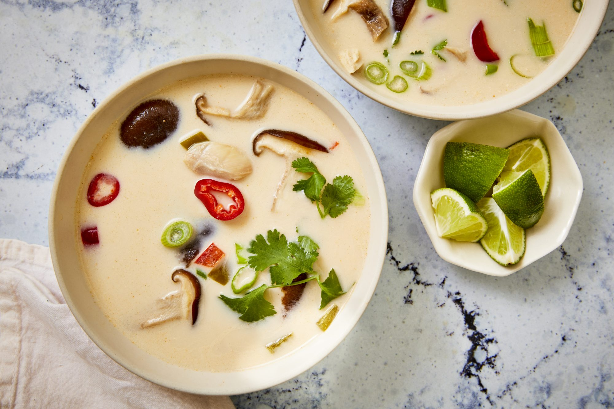

Tom Kha Gai

Little spicy, Sour and smooth. Very easy to taste it.
Coconut milk boil with chilli and herbs, and chicken in it.
Another delicious recipe. This is meant to serve four as an entree.
Ingredients
- 10 cups chicken stock
- 2 (5 ounce) skinless, boneless chicken breasts, sliced
- ½ cup shiitake mushrooms
- 3 peppers red chile peppers, chopped
- 8 leaf (blank)s kaffir lime leaves
- 2 stalks lemongrass, chopped
- 2 (14 ounce) cans coconut milk
- ½ cup green bell pepper, chopped
- ½ cup red bell pepper, chopped
- 5 tablespoons fish sauce
- 3 (1 inch) pieces galangal, peeled and chopped
- 4 tablespoons lime juice
- 6 medium (4-1/8" long)s green onions, sliced
- 1 tablespoon chopped Thai basil
- 1 tablespoon chopped fresh cilantro
Steps
- Pour chicken stock in a large pot and bring to a boil; add chicken, mushrooms, chile peppers, lime leaves, and lemongrass.
Boil until chicken is no longer pink in the centers and juices run clear, about 10 minutes.
Reduce heat to medium and add coconut milk, bell peppers, fish sauce, and galangal. Boil for 2 minutes; reduce heat to low and add lime juice.
- Taste and adjust soup as necessary. Serve with green onions, basil, and cilantro.
Home page